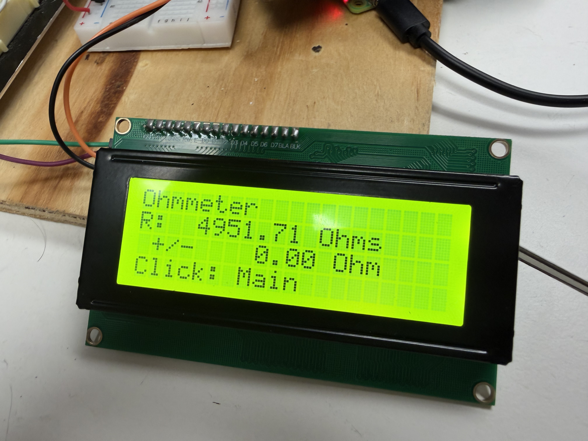

Ohmmeter
Welcome to the Ohmmeter manual. This tool measures the resistance of a component connected to the Tool Bench system and displays the result directly on the LCD — along with an error range so you know how precise the reading is. For example, you might see R: 1050.34 Ohms ± 12.50 Ohm, meaning the system measured approximately 1050Ω and the true value is estimated to fall within that ± window.
Measurement range: ~500Ω – 10kΩ • Autoranging • Live continuous reading
How It Works
To improve accuracy, the system takes 10 samples in quick succession and averages them. The spread between the highest and lowest readings is used to calculate the ± error range shown on screen. A smaller error range means the readings were very consistent — a larger one may indicate a noisy connection or an unstable component.
The display refreshes up to 5 times per second, and only updates when the reading changes by more than 1Ω to keep the screen readable.
R: None. This is normal — it simply means the system could not detect a valid component.
Before You Start
Unlike the Voltmeter or DC Reference, the Ohmmeter has no sub-menu or mode selection. Once you enter it from the main menu, it immediately begins measuring. All you need to do beforehand is connect your component to the correct input terminals.
R: None or give unreliable readings.
Connect Your Resistor
Before entering the Ohmmeter from the menu, connect the resistor you want to measure to the external input terminals on the Tool Bench. Connect one leg to any pin from G through J - 26. Then connect the other leg into ground as seen in the photo (between the red and blue lines). Resistance has no polarity, so either leg of the resistor can go into either terminal.
Make sure the connection is firm. A loose or intermittent contact will result in noisy readings and a large error value.
.jpg)
Access the Ohmmeter
From the main system menu, turn the rotary encoder to highlight Ohmmeter and press to select it. The system will immediately open the SPI connection to the internal measurement hardware and begin sampling.
The LCD will show the Ohmmeter screen, which has four lines:
- Line 1:
Ohmmeter— the tool name - Line 2:
R: XXXX.XX Ohms— the measured resistance, updated live - Line 3:
+/- XX.XX Ohm— the estimated error range - Line 4:
Click: Main— reminder that pressing the encoder exits
There is no additional setup required — the reading starts automatically.

Read the Measurement
Watch the display as it updates. A stable reading with a small error range means the system has a confident measurement. For example:
R: 1050.34 Ohmswith+/- 5.20 Ohmis a stable, confident reading.R: 1050.34 Ohmswith+/- 80.00 Ohmsuggests noise — check that your connections are secure.R: Nonemeans no valid component was detected. Check the connection or verify the component is within the 500Ω–10kΩ range.

Exit to the Main Menu
When you have finished taking your measurement, press the rotary encoder once. The system will close the internal SPI connection cleanly and return you directly to the main system menu.
There is no dedicated “Back” step within the Ohmmeter — pressing the encoder from anywhere on this screen always goes to Main.
Example Demonstration
Watch the video below to see the Ohmmeter measuring a resistor live, including what the display looks like during a stable reading and how to exit cleanly.